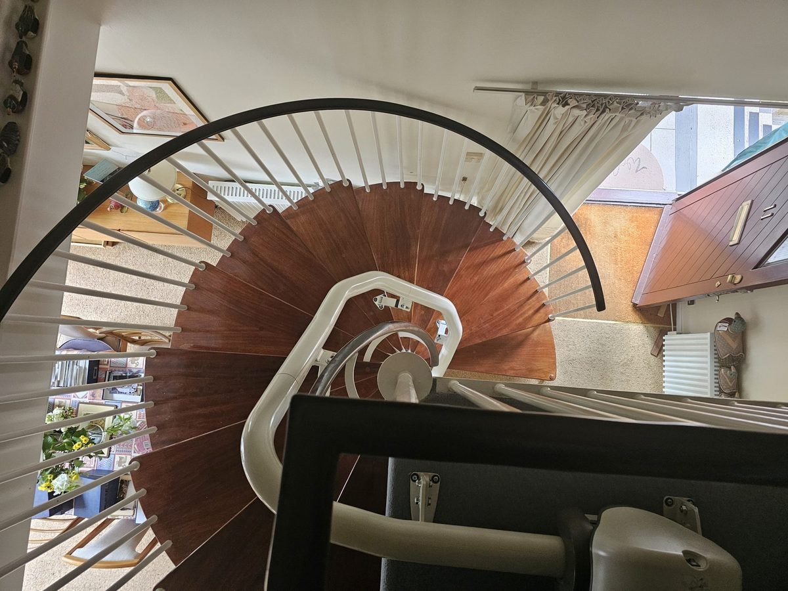

Told your stairs can't take a stairlift? You may still have options.
Tell us about the stairs and we'll tell you what's realistic. Free, about two minutes, no obligation.
Three things worth checking before you give up
Was more than one firm asked?
Firms differ in which stairs they'll take on, so one no isn't always the final word.
Was a different seat or rail discussed?
Perching seats, folding rails and custom curved tracks suit different stairs.
Were alternatives mentioned?
If the stairs really can't take a lift, options such as [through-floor lifts] exist. It helps to know early.
A job another firm had turned down

Several firms said this spiral staircase couldn't take a stairlift. Senior Stairlifts built a custom curved rail to follow every turn. [Area, month]
Senior Stairlifts is endorsed by Which? Trusted Traders, rated 4.9 out of 5 from 144 customer reviews (checked 25 October 2026). See their Which? listing (opens in a new tab)
Not sure what applies to your stairs?
Six short questions. We'll pass you to one installer who handles difficult stairs.
Start the checkQuestions people ask
Will you pass my details to lots of companies?
No. Your details go to one installer who covers your area, to begin with Senior Stairlifts. You can ask them to stop contacting you at any time.
Does it cost anything?
The check is free. Senior Stairlifts say their survey is free and comes with no obligation. [Confirm this applies to us]
What if a stairlift won't work?
We'll say so plainly and point to alternatives.